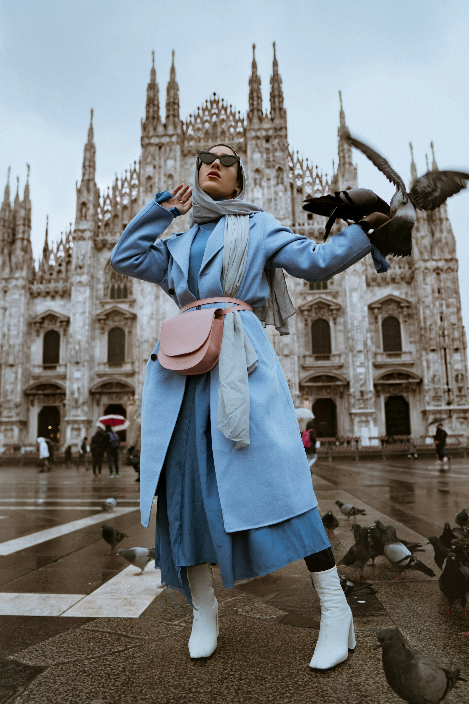
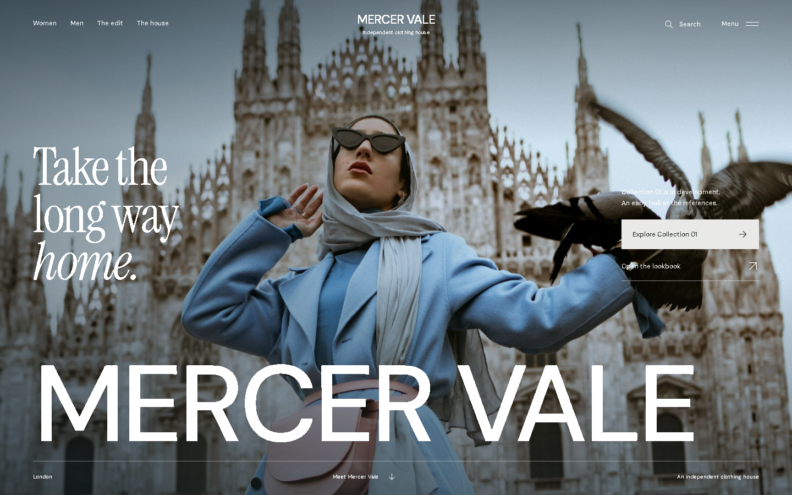
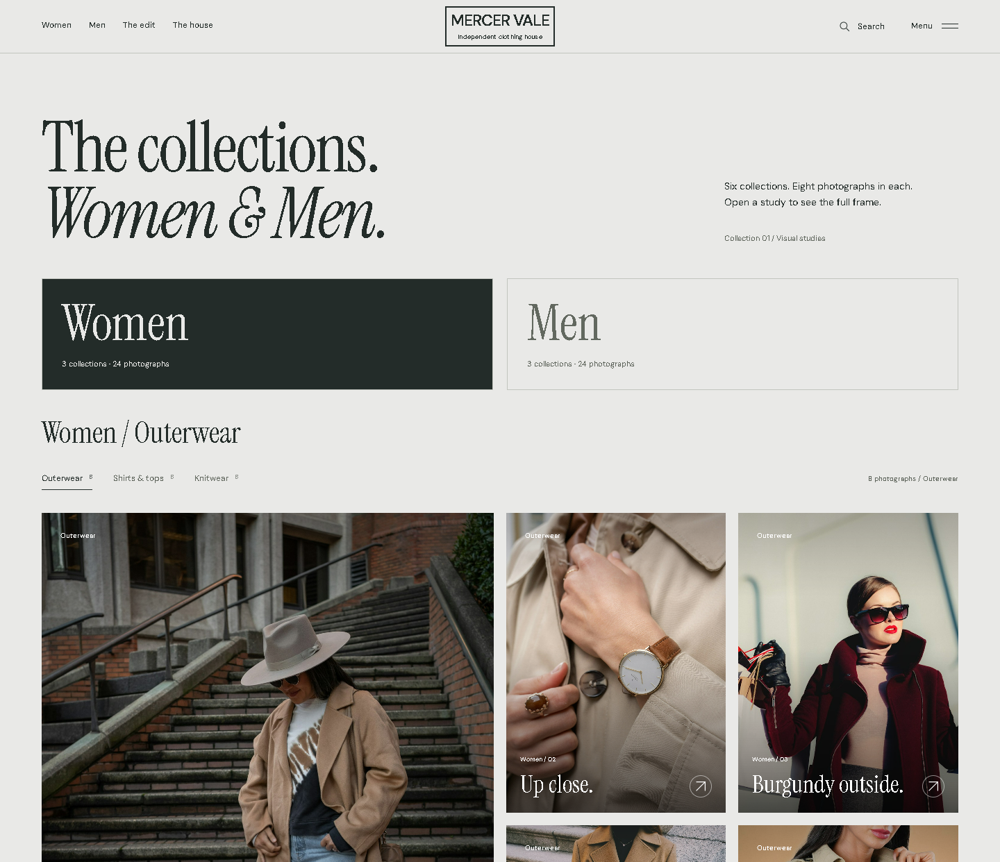
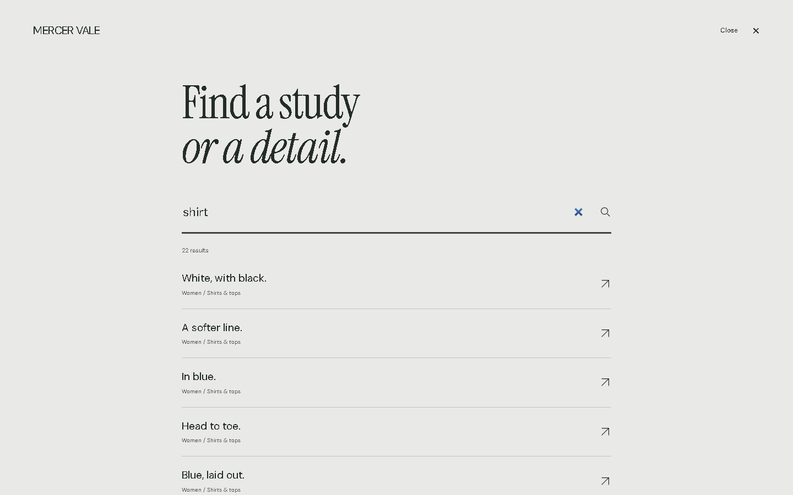
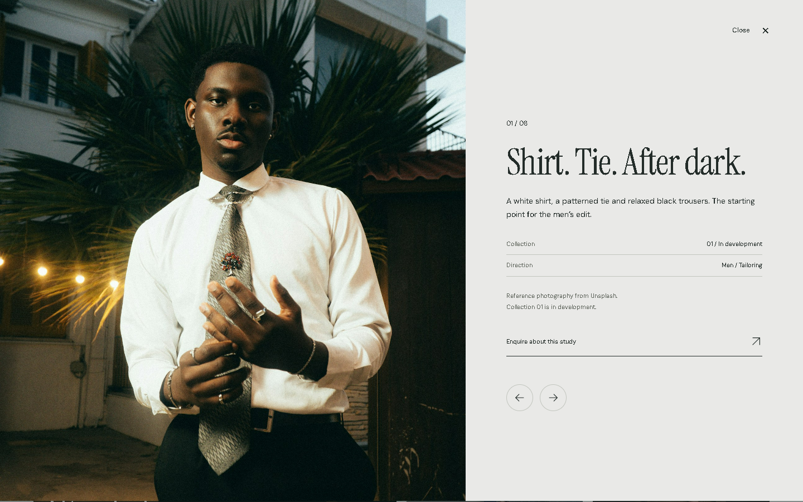
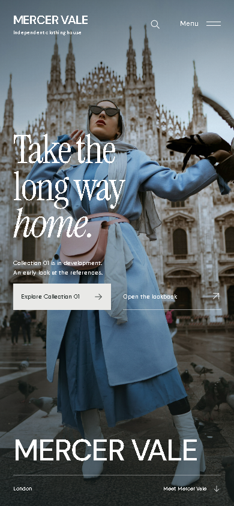
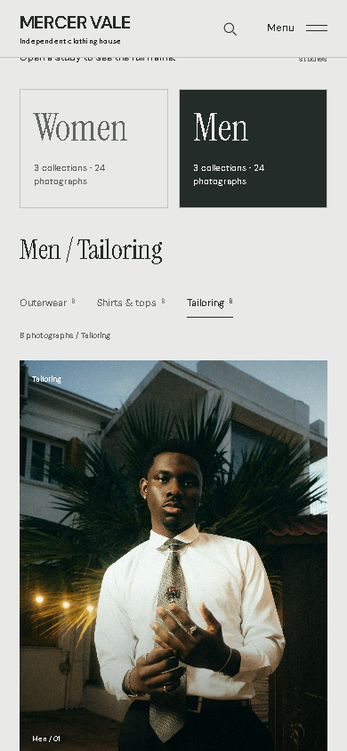
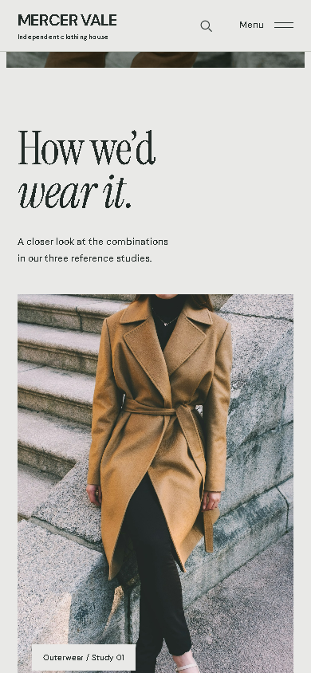
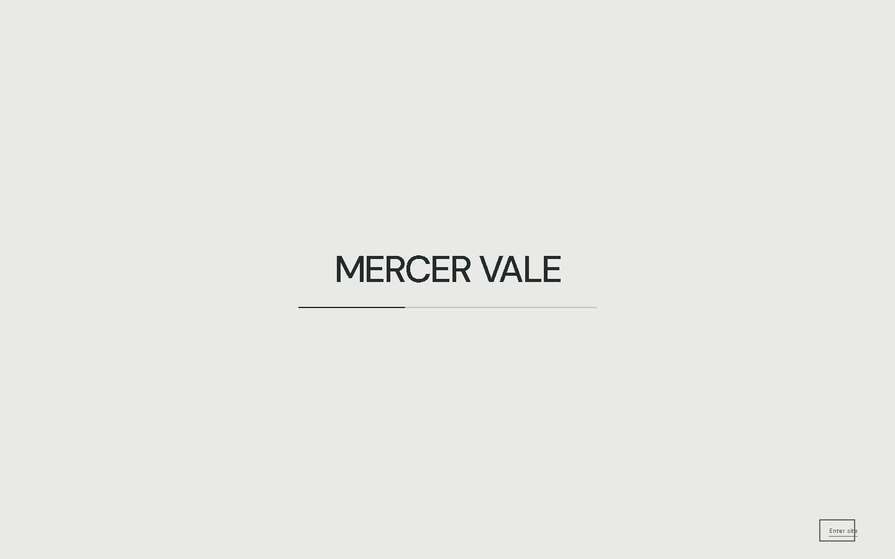
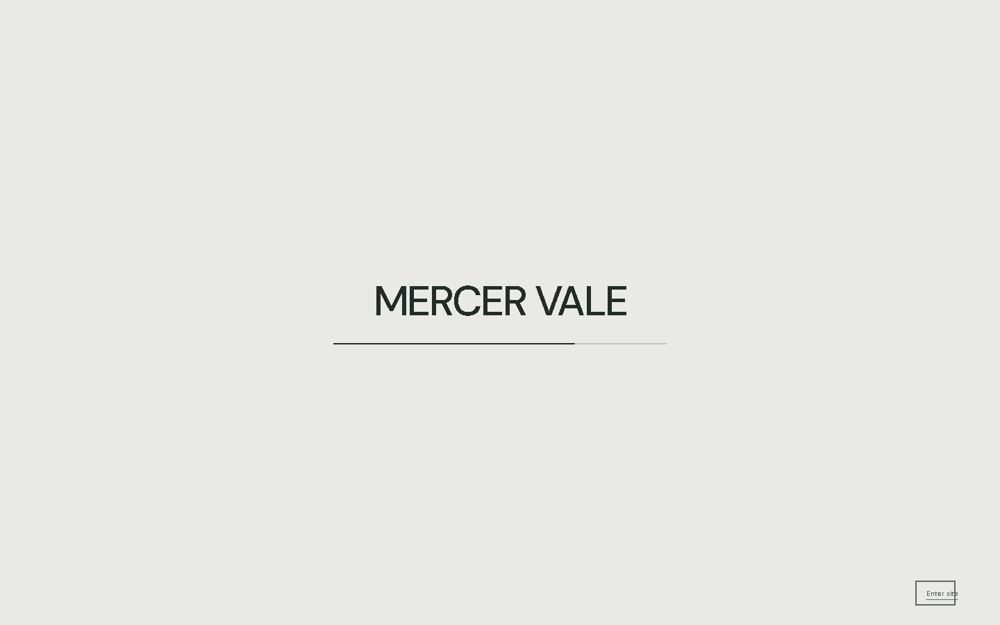

Take the
long way home.
A clothing house.
A digital point of view.
Сайт, в котором одежду
хочется рассмотреть.
Для MERCER VALE мы выстроили цифровую подачу первой коллекции: от исследовательских референсов до работающего интерфейса. В основе — крупная съёмка, спокойная типографика и движение, которое связывает экраны.
Задача — сохранить атмосферу модной кампании и дать посетителю понятный путь к образам, истории бренда и контакту.
From reference
to a direction.
Изучили структуру десяти магазинов одежды и тексты ещё пяти брендов. White Desert стал композиционным референсом: масштаб кадра, длинные паузы, смена крупности.
Референсы дали принципы, а не готовый шаблон. Туристическую драматургию адаптировали к одежде, коллекции и редакционной подаче.
Коллекцию подняли ближе к началу. Добавили категории, поиск и быстрый просмотр — чтобы атмосфера вела к исследованию одежды.

Крупный кадр задаёт характер бренда. Заголовок и навигация располагаются вокруг героя съёмки.
Коллекция — основной путь. Лукбук — быстрый вход для тех, кто хочет сразу рассмотреть образы.
Маленькая навигация, редакционный заголовок, большой знак у нижнего края. Каждый масштаб выполняет свою роль.
Paper. Ink.
A little blue.
Основная поверхность
Текст и навигация
Выделение и служебные акценты
Тон фотографии, не UI-токен
Холодная бумага поддерживает фотографию. Тёмный текст остаётся читаемым на длинной странице. Голубой приходит из одежды в кадре, а не из декоративных градиентов.
Пластичная антиква даёт голос кампании. Курсив поддерживает интонацию, сохраняя спокойный ритм.
way home.
Прямой гротеск удерживает структуру: навигацию, фильтры и короткие описания. Он не конкурирует с фотографией.
VALECollection · The edit · The house
A collection
you can browse.

В Women и Men — по три отдельные коллекции. Каждая вкладка открывает свои восемь фотографий: всего 48 разных кадров, без повторов между коллекциями.
Крупный вертикальный кадр задаёт ритм сетке образов и деталей. На телефоне композиция перестраивается, сохраняя заметное разделение Women / Men.
Outerwear, Shirts & tops, Knitwear и Tailoring обозначают содержание коллекций. У выбранной вкладки — свой заголовок, счётчик из восьми кадров и прямая ссылка.

Search, with an answer.
Локальный поиск охватывает все 48 фотографий коллекций и разделы страницы. Результат открывает кадр внутри нужной коллекции. Если совпадений нет, интерфейс подсказывает, что искать дальше.

Room to look closer.
Полноэкранный просмотр остаётся внутри восьми фотографий выбранной коллекции. Описание и счётчик соответствуют кадру. Стрелки переключают фото; Escape закрывает просмотр и возвращает фокус.
Designed
for the hand.
На мобильном меняются масштаб, порядок акцентов и поведение кадров. Закреплённая фотоистория уступает обычной прокрутке; управление остаётся доступным одним касанием.



A quiet
way in.
Название MERCER VALE расположено по центру бумажного фона, под ним — тонкая полоса прогресса. Завершение загрузки связано с готовностью обложки и шрифтов, затем экран плавно открывает кампанию. Загрузку можно пропустить или повторить.


Строки выходят из маски с коротким смещением по времени.
Кадр расширяется при входе в экран и движется вместе с нативной прокруткой.
Reduced motion убирает пространственные эффекты. Контент доступен и без анимации.
Less promise.
More observation.
Room to be yourself.
Общее обещание, которое можно поставить почти на любой модный сайт.
The white top.
A sleeveless white top with straight blue denim. Raw hems and dark sandals give the outfit a sharper finish.
Переписали английские заголовки, описания образов, поиск, FAQ и контакт. Тексты опираются на видимые детали и статус коллекции. Утверждения о тканях, фабриках и долговечности без данных не добавлялись.
The first collection.
Before the first order.
Результат — концепт сайта бренда одежды с собственным визуальным направлением, адаптивной композицией и шестью отдельными коллекциями. В каждой — восемь фотографий, поиск и полноэкранный просмотр.
Проверены компьютер и телефон, все шесть вкладок и каждая последовательность из восьми кадров, а также поиск, клавиатура, загрузка и reduced motion. Влияние на продажи не измерялось; коллекция находится в разработке.
MERCER VALE